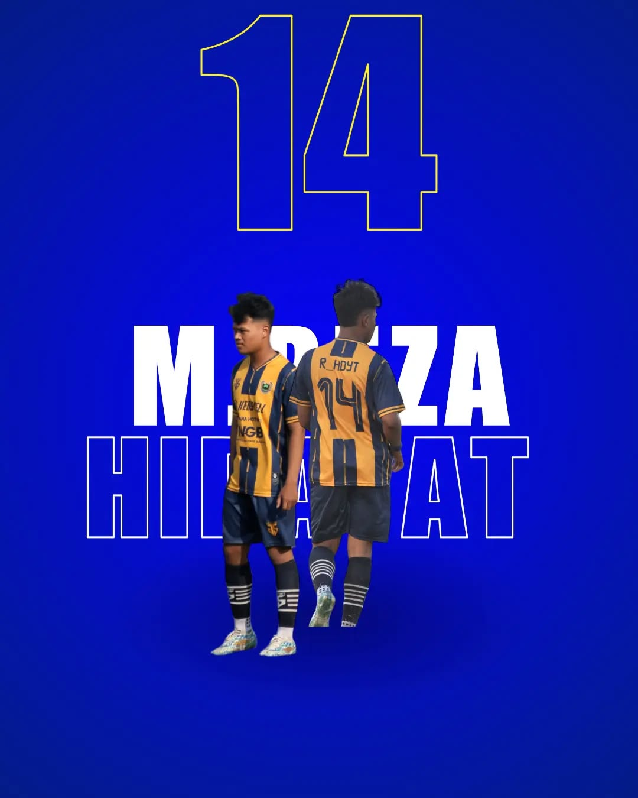

Formasi 4-3-3

Fian Alghif
No: 99
Posisi: Winger
Winger lincah dengan dribel cepat dan crossing akurat.
Farhan Al Hakim
No: 11
Posisi: Striker
Striker tajam dengan insting mencetak gol tinggi.
Bayu Saputra
No: 9
Posisi: Winger
Winger muda dengan kecepatan dan tembakan keras.
Adi Sunardi
No: 5
Posisi: Gelandang
Playmaker kreatif dengan visi permainan luar biasa.
Asep Priyanto
No: 17
Posisi: Gelandang
Motor serangan cepat, rajin bergerak tanpa bola.
Repan Alfansyah
No: 10
Posisi: Gelandang
Pengatur tempo, piawai dalam tendangan bebas.
Nafis
No: 91
Posisi: Bek Kanan
Bek kanan dengan kecepatan tinggi dan kemampuan overlap menyerang.

Reza Hidayat
No: 14
Posisi: Bek Tengah
Bek tangguh dengan postur tinggi, spesialis duel udara.
Utup Panggabean
No: 3
Posisi: Bek Tengah
Pengalaman internasional, pengatur lini belakang dengan ketenangan tinggi.
Irul Hadi
No: 01
Posisi: Bek Kiri
Dikenal dengan lemparan jauh dan crossing akurat.
Arieka
No: 33
Posisi: Kiper
Penjaga gawang utama dengan refleks cepat dan penguasaan bola yang baik.